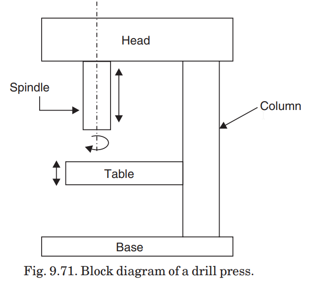
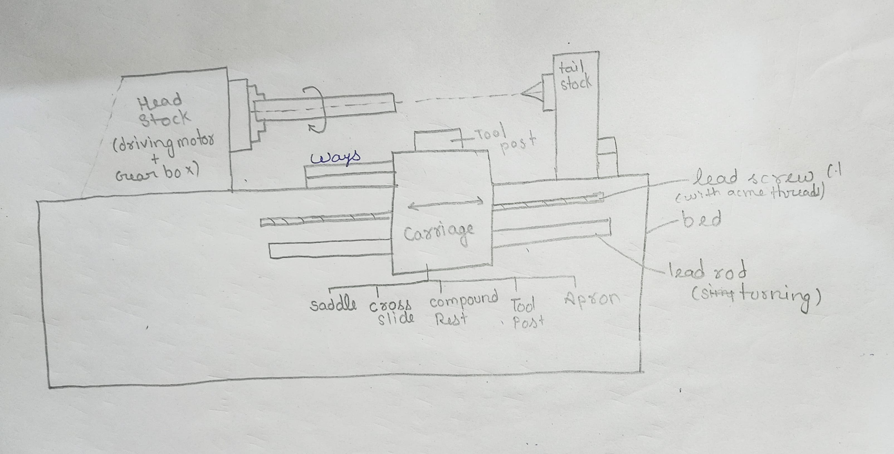

Unit 4
Drilling
Drilling is a process of making hole or enlarging a hole in an object by forcing a rotating tool called “Drill”. The drill is generally called as ‘twist drill’. it has a sharp twisted edges formed around a cylindrical tool provided with a helical groove along its length to allow the cut material to escape through it.

Principle of drilling
A drilling machine operates on the principle of rotating a multi-point cutting tool, known as a drill bit, to create cylindrical holes in a workpiece. The drill bit applies axial force while rotating to remove material, producing holes with a circular cross-section.Lathe Machine

Principle and Construction of Lathe Machine
The principle behind the lathe machine lies in its mechanism of material removal through relative motion between the cutting tool and the wrokpiece.
Construction of Lathe Machine:
1. Bed:
- Base providing a stable platform.
- Usually made of cast iron to absorb vibrations.
2. Headstock:
- Located at one end of the bed, holds the main spindle.
- Contains driving motor and gearbox.
3. Tailstock:
- Positioned opposite the headstock, supports the other end of the workpiece.
- Adjustable along the bed's length.
- Allows drilling and other operations.
4. Carriage:
- Moves along the bed's ways.
- Consists of saddle (supports tool post and cutting tool) and cross-slide.
- Enables longitudinal and transverse movement for precise tool positioning.
5. Tool Post:
- Mounted on the carriage, securely holds the cutting tool.
- Various types (e.g., quick-change tool posts) allow rapid tool changes.
6. Apron:
- Attached to the carriage, houses mechanisms for controlling movement.
- Contains gears, clutches, and levers for engaging feeds and speeds.
7. Lead Screw:
- Provides longitudinal carriage movement for threading operations.
8. Feed Rods:
- Transmit motion to the carriage and cross-slide for controlled tool movement.
9. Chuck or Faceplate:
- Attached to the spindle, holds the workpiece securely.
10. Motor:
- Provides power to drive the spindle.
Lathe Operations
1. Facing:
- Machining ends of a workpiece to produce a flat surface perpendicular to the axis.
- Done in two steps - rough and fine facing.
2. Plain Turning:
- Removing excess material from the cylindrical surface of the workpiece.
- Work held in chuck or between centers, providing longitudinal feed to the tool.
3. Step Turning:
- Creating steps of varying diameters in the workpiece.
- Similar to plain turning.
4. Taper Turning:
- Producing a conical surface by gradually reducing diameter from a cylindrical workpiece.
- Methods include:
- setting over the tailstock center.
- swiveling the compound rest.
- By using a taper turning attachment.
5. Drilling:
- Producing cylindrical holes using a rotating cutting edge tool (drill).
- Work held in chuck or faceplate while feeding the drill through the tailstock.
6. Reaming:
- Follows drilling for high-grade surface finish and dimensional accuracy.
- Utilizes a reamer with multiple cutting edges held on the tailstock spindle.
7. Boring:
- Enlarging and turning holes previously made by drilling, punching, casting, or forging.
- Utilizes a boring tool or bit fed into the work similar to turning.
8. Undercutting/Grooving:
- Reducing the diameter of a workpiece over a narrow surface, often near a thread or shoulder.
- Utilizes a grooving tool fed into the work.
9. Threading:
- Cutting helical grooves on the external cylindrical surface of the workpiece.
- Requires a threading tool fed longitudinally to the revolving work.
10. Knurling:
- Embossing a diamond-shaped pattern on a workpiece surface for improved grip.
- Performed using a special knurling tool pressed against the revolving workpiece.
11. Forming:
- Turning convex, concave, or irregular shapes.
- Achieved using forming tools, combining cross and longitudinal feeds, or tracing a template.
Types of Lathes:
1. Speed Lathe:
- Spindle rotates at very high speed using a variable speed motor in the headstock.
- Used for woodwork, centering, metal spinning, and polishing.
2. Engine or Centre Lathe:
- Most common type, widely used in workshops.
- Variable spindle speed control for cutting as desiired which is not possible in speed lathe.
- Carriage allows tool feed in cross and longitudinal directions.
3. Bench Lathe:
- Mounted on a bench, smaller in size.
- Handles small work with accurate like in production of gauges, punches, and press tool beds.
4. Tool Room Lathe:
- Similar to engine lathe, designed for precision and accuracy.
- Used for manufacturing precision components, dies, tools, and jigs.
5. Turret and Capstan Lathes:
- Hold multiple tools for a wide range of operations.
- Suitable for mass production of identical parts efficiently.
6. Automatic Lathes:
- Automatically feed and withdraw tools for operations.
- Requires minimal operator attention, used for mass production.
Difference between turrent and capstan
| Turret Lathe | Capstan Lathe |
|---|---|
| Turret mounted on saddle directly | Turret mounted on an auxiliary slide on saddle |
| Entire saddle moved for tool feeding | Saddle fixed, tools fed by moving slide |
| High rigidity, cutting forces to bed | Tool support prone to bending, vibrations |
| Handles heavier jobs | Suitable for lighter, smaller, precision work |
| Up to 200 mm diameter | Up to 60 mm diameter |
| Tool travels almost full length of bed | Tool travel limited due to slide traverse |
| Relatively slower tool feeding, more operator fatigue | Faster tool traverse, less operator fatigue |
| Equipped with reach-over or side hung type carriage | Usually equipped with reach-over type carriage |
| Provisions for heavy job grips, some models have cross feeding for turret head | May lack provisions like cross feeding for turret head |